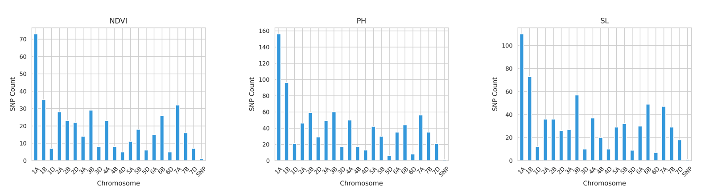
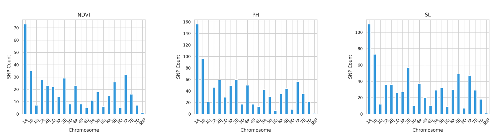

XGBoost Analysis Summary
XGBoost (Extreme Gradient Boosting) is a powerful machine learning algorithm widely used for predictive modeling and feature selection in genomic research. It works by building an ensemble of decision trees in a sequential manner, where each new tree corrects the errors of the previous ones. This approach improves model accuracy and handles complex relationships between genetic markers and traits efficiently.
In this project, XGBoost was applied to the genotype and phenotype data to identify important SNP markers influencing various wheat traits. It helps in selecting markers that contribute most to predicting traits like yield, plant height, and grain weight, which can assist in breeding better wheat varieties.
XGBoost Results
Below is the combined results visualization for all traits analyzed using XGBoost.

 
